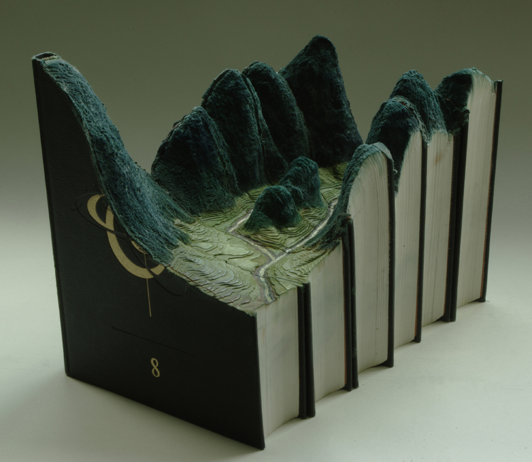
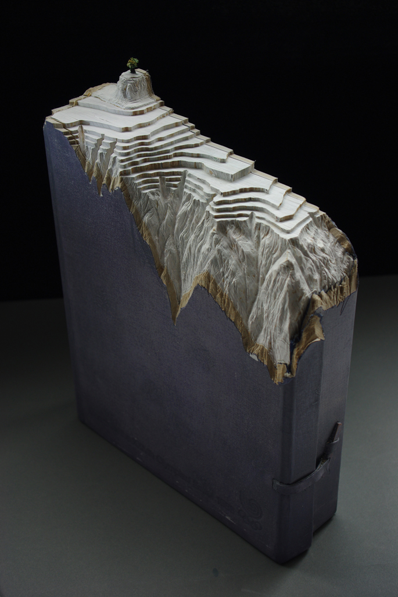
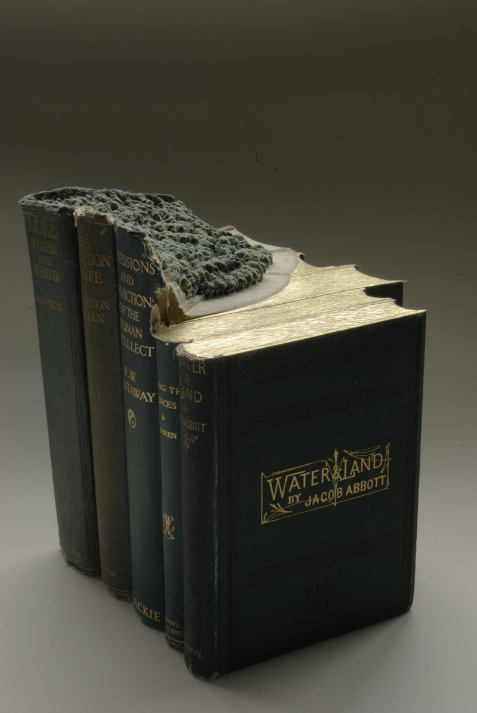
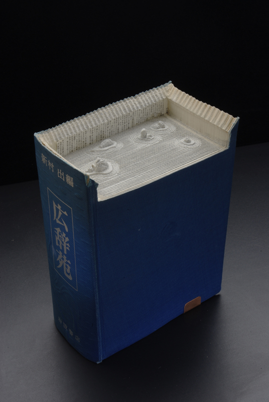

The Great Wall
Rather than accepting that knowledge is simply accumulated, artist Guy Laramee views the world’s knowledge as a resource that is eroded over time. In the same way that mountains slowly erode to hills, piles of obsolete encyclopedias eventually erode from sources of knowledge to objects that simply exist.
View more of Guy Laramee’s carved book art and landscape paintings at his site - guylaramee.com